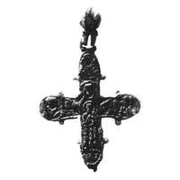

Catalog › CE-0857 · KOR2003-II.1.4.1
Valvă de revers de encolpion cu Maica Domnului Orantă cu Pruncul și trei sfinți în medalioane, relief jos
sec. sfârșit XII (1101–1200) · Kiev, Ucraina · Muzeul Național de Istorie al Ucrainei, Kiev, inv. В-4552/176 (3905; 18022; 669)
single valve of a reliquary cross, aramă; c. sfârșit XII (1101–1200); found at Kiev, Ucraina; kept at Muzeul Național de Istorie al Ucrainei, Kiev.


Identificare
- Categorie
- Valvă izolată
- Material
- Aramă
- Tehnică
- Turnare în relief; Gravare (incizie)
- Dimensiuni
- Î 82 × L 72 mm
Iconografie
- Revers
- Maica Domnului Orantă; Neidentificat
- Descriere revers
- Valvă de revers cu inel de agățare biconic cu două valve; pierdute balamaua din dreapta sus și ambele balamale de jos. Toate imaginile în relief jos. Câmpul principal: Maica Domnului în picioare cu brațele ridicate (Orantă) și Pruncul înaintea ei cu mâna dreaptă binecuvântătoare (fără medalion). Imaginile pe jumătate, de față, ale sfinților în trei medalioane sunt neclare și neidentificabile. Valva este încadrată cu o bordură joasă, netedă. Inscripție pe laturile imaginii Maicii Domnului: МР ӨУ.
- Inscripții
- МР ӨУ
- Limba
- Greacă
Datare și atribuire
- Datare
- sec. sfârșit XII (1101–1200)
- Centru
- Necunoscut
- Tipologie
- Korzukhina–Peskova 2003, tip II 1 4
Descoperire
- Localitate
- Kiev
- Țară
- Ucraina
- Context
- Descoperire izolată
Păstrare și referințe
- Colecție
- Muzeul Național de Istorie al Ucrainei, Kiev
- Nr. inventar
- В-4552/176 (3905; 18022; 669)
- Bibliografie
- G. F. Korzukhina, A. A. Peskova, Древнерусские энколпионы. Нагрудные кресты-реликварии XI–XIII вв., Sankt-Petersburg, 2003 [Korzukhina–Peskova 2003], p. 83, cat. nr. II 1 4/1, reprodusă la Табл. 34 (planșe, p. 276). Bibliografie citată în sursă: Леопардов 1891б, табл. I, 6; Корзухина, архив ф. 77, д. 15, л. 24.
- Figura
- Табл. 34
- Planșe
- Korzukhina–Peskova 2003, Табл. 34 (planșă fără paginație proprie în PDF; p. 276 tipărită)
- Observații
- Datare după Peskova: sec. sfârșit XII. Circumstanțe: Strada Bolșaia Podvalnaia (azi Iaroslavov Val 1); descoperire întâmplătoare „în pământ” la sfârșitul sec. XIX. Proveniență în colecție: din colecția N. A. Leopardov. Gravarea marcată cu semn de întrebare în sursă („резьба (?)”). Foto după Leopardov 1891b. Coordonate: nu sunt date în sursă.
Citare: Corpus Encolpiorum, CE-0857, Valvă de revers de encolpion cu Maica Domnului Orantă cu Pruncul și trei sfinți în medalioane, relief jos, --root/piese/KOR2003-II.1.4.1/ (accesat 2026-10-20).